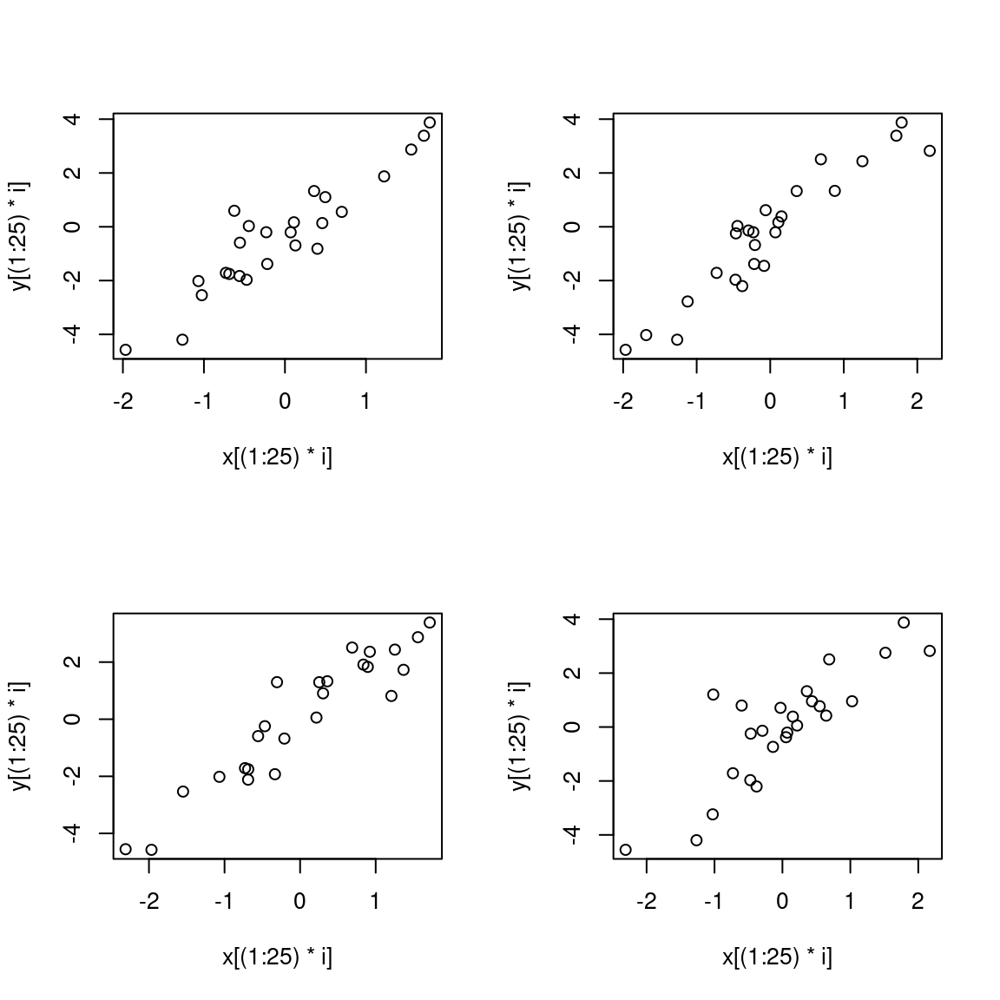

# install.packages("rmarkdown")Lab: R Markdown Introduction
Actuarial Data Science Online Textbook
Learning Objectives
- Learn how to use R Markdown to write an academic report.
R Markdown Introduction
This is an R Markdown document. Markdown is a simple formatting syntax for authoring HTML, PDF, and MS Word documents. To learn more details on using R Markdown, please refer to R Markdown Cookbook and R Markdown: The Definitive Guide. After attending this Lab session, students are expected to learn basic skills in writing documents using R Markdown.
There are many advantages to use R Markdown in your work. An important benefit is that it allows your R code and/or its outputs to be directly embedded into formatted documents for communication and provides quick and reproducible reporting from R. However, when using Latex or Word to write a paper or assignment, the codes and data are run in a separate place and you need to manually insert all outputs, such as figures and tables, into the document. And when there is a change of results due to the change of data or code, you need to update all related outputs manually in your report, which can be time consuming and easy to make mistakes. However, R Markdown allows all outputs to be automatically updated when there is a change. Another advantage is that it is incredibly easy to use. R Markdown uses simple syntax and can be learned quickly.
Installation
Before you install R Markdown, you need have R and RStudio downloaded. First, to install R, go to this link R. Remember to choose a correct version for your system. Then, to install RStudio, go to this link, RStudio. Also remember to install a correct version for your system.
Now open RStudio to install R Markdown. R Markdown files are designed to be used with the rmarkdown package. rmarkdown comes installed with the RStudio IDE, but you can acquire your own copy of rmarkdown from CRAN with the command.
Note: RStudio does not build PDF and Word documents from scratch. You will need to have a distribution of Latex installed on your computer to make PDFs and Microsoft Word (or a similar program) installed to make Word files.
According to the R Markdown Cook Book,
“If you would like to create PDF documents from R Markdown, you will need to have a LaTeX distribution installed. Although there are several traditional options including MiKTeX, MacTeX, and TeX Live, we recommend that R Markdown users install TinyTeX.”
#To install TinyTex, uncomment and run the following code
#tinytex::install_tinytex()
# to uninstall TinyTeX, uncomment and run the following code
#tinytex::uninstall_tinytex()Open your R Studio, Click “File” -> “New File” -> “R Markdown”. Then you will see this:
knitr::include_graphics('rmarkdown window.jpg')
Here you can choose an output format, and it’s not important because you can change the format anytime later.
Knit & Convert
R Markdown files are the source code for rich, reproducible documents. You can transform an R Markdown file in two ways.
knit - You can knit the file. The rmarkdown package will call the
knitrpackage.knitrwill run each chunk of R code in the document and append the results of the code to the document next to the code chunk. This workflow saves time and facilitates reproducible reports. Consider how authors typically include graphs (or tables, or numbers) in a report. The author makes the graph, saves it as a file, and then copy and pastes it into the final report. This process relies on manual labor. If the data changes, the author must repeat the entire process to update the graph. In the R Markdown paradigm, each report contains the code it needs to make its own graphs, tables, numbers, etc. The author can automatically update the report by re-knitting.convert - You can convert the file. The rmarkdown package will use the pandoc program to transform the file into a new format. For example, you can convert your ‘.Rmd’ file into an HTML, PDF, or Microsoft Word file. You can even turn the file into an HTML5 or PDF slideshow. rmarkdown will preserve the text, code results, and formatting contained in your original .Rmd file. Conversion lets you do your original work in markdown, which is very easy to use. You can include R code to knit, and you can share your document in a variety of formats.
In practice, authors almost always knit and convert their documents at the same time. In this article, I will use the term render to refer to the two step process of knitting and converting an R Markdown file.
Task
Knit the empty template called template.Rmd and review the output.
Three Frameworks
R Markdown reports rely on three frameworks.
- markdown for formatted text.
knitrfor embedded R code.- YAML for render parameters.
Markdown for Formatted Text
Markdown is a set of conventions for formatting plain text. You can use markdown to indicate
bold and italic text: Surround italicized text with asterisks, like this without realizing it. Surround bold text with two asterisks, like this easy to use.
lists: Group lines into bullet points that begin with asterisks. Leave a blank line before the first bullet.
headers (e.g., section titles): Place one or more hashtags at the start of a line that will be a header (or sub-header). For example, # Say Hello to markdown. A single hashtag creates a first level header. Two hashtags, ##, creates a second level header, and so on.
hyperlinks: Github, StackOverflow, Reddit
and much more
The conventions of markdown are very unobtrusive, which make Markdown files easy to read. The file below uses several of the most useful markdown conventions.
To access a quick guide, click -> “Help” -> “Markdown Quick Reference”. RStudio will open the Markdown Quick Reference guide in the Help pane.
A more comprehensive guide can be found, click -> “Help” -> “Cheatsheets” -> “R Markdown Cheat Sheet”.
knitr for embedded R code
The knitr package extends the basic markdown syntax to include chunks of executable R code.
When you render the report, knitr will run the code and add the results to the output file. You can have the output display just the code, just the results, or both.
To embed a chunk of R code into your report, surround the code with two lines that each contain three backticks. After the first set of backticks, include {r}, which alerts knitr that you have included a chunk of R code. A shortcut to embed a chunk is to press “ALT + CTRL + I”. The result will look like this
dim(iris) # Retrieve or set the dimension of an object.[1] 150 5iris[3,1] # The object at row 3 co[1] 4.7YAML for render parameters
title: “your awesome title” author: “your name” date: “today” or type any time you want.
The output: value determines what type of output to convert the file into when you call rmarkdown::render(). Note: you do not need to specify output: if you render your file with the RStudio IDE knit button.
output: recognizes the following values:
html_document, which will create HTML output (default)pdf_document, which will create PDF outputword_document, which will create Word output
You can also use the output: value to render your document as a slideshow.
output: ioslides_presentation will create an ioslides (HTML5) slideshow output: beamer_presentation will create a beamer (PDF) slideshow
However, you can see the output of this file is bookdown::html_document2( a bookdown output format).
The reason is that cross-referencing is not provided directly within the base rmarkdown package, but is provided as an extension in bookdown. We must therefore use an output format from bookdown (e.g., html_document2, pdf_document2, and `word_document2,etc.) in the YAML output field. We will talk about cross-referencing in the last section.
Now let me illustrate this template of header in detail. You can create a cool template yourself. Here is good resource for learning (https://bookdown.org/yihui/rmarkdown/).
You can add a table of contents (TOC) using the toc option and specify the depth of headers that it applies to using the toc_depth option. For example:
toc: yes
toc_depth: ‘3’
You can add section numbering to headers using the number_sections option:
number_sections: yes
fig_caption=yes controls whether figures are rendered with captions.
code_folding: hide : hide option enables you to include R code but have it hidden by default. Users can then choose to show hidden R code chunks either individually or document wide. You can specify code_folding: show to still show all R code by default but then allow users to hide the code if they wish. How to do it? I will show you in the next section.
Rendering
To transform your markdown file into an HTML, PDF, or Word document, click the “Knit” icon that appears above your file in the scripts editor. A drop down menu will let you select the type of output that you want. Let’s try all of them. A shortcut for Windows is to press “SHIFT + CTRL +K”. (The short-cut to render in mac is SHIFT+COMMAND+K)
When you click the button, rmarkdown will duplicate your text in the new file format. rmarkdown will use the formatting instructions that you provided with markdown syntax. Once the file is rendered, RStudio will show you a preview of the new output and save the output file in your working directory.
Task: change the output to html and Knit it
Hint: go to the header (top).
Chunks
Now, you are familiar with R Markdown and it’s time to practice. R Markdown is a variant of Markdown that has embedded R code chunks, to be used with knitr to make it easy to create reproducible web-based reports.
Code chunks
Now, let’s use “CTRL + ALT + I” to create an empty chunk. (A shortcut to embed a chunk is in mac is OPTION+COMMAND+I)
It’s usually best to give each code chunk a name, like simulate-data above. The name is optional; if included, each code chunk needs a distinct name. The advantage of giving each chunk a name is that it will be easier to understand where to look for errors, should they occur. Also, any figures that are created will be given names based on the name of the code chunk that produced them.
Chunk options
The initial line in a code chunk may include various options.
echo=FALSEindicates that the code will not be shown in the final document (though any results/output would still be displayed). Remember in the header we already setcode_folding: hide. If you want to show codes for specific chunk you can setecho=TRUEfor that chunk.You use
results='hide'to hide the results/output (but here the code would still be displayed).You use
include=FALSEto have the chunk evaluated, but neither the code nor its output displayed. If I’m writing a report for a collaborator, I’ll often useinclude=FALSEto suppress all of the code and largely just include figures.warning=FALSEandmessage=FALSEsuppress any R warnings or messages from being included in the final document.
set.seed(123)
x <- rnorm(100) # 100 random variables from a standard normal distribution
y <- 2*x + rnorm(100)
cor(x, y)For figures, you’ll want to use options like fig.width and fig.height. You can see the output of this particular chunk by clicking the “green play button” called Run Current Chunk. Have a try here:
plot(x,y)
Note that if include=FALSE, all of the code, results, and figures will be suppressed. If include=TRUE and results="hide", the results will be hidden but figures will still be shown. To hide the figures, use fig.show="hide".
If you want to add an image that is not produced within Rmarkdown. This can be done by using .
BUT! A better way to add an image is using include_graphics():
knitr::include_graphics('unsw.jpg')The advantage is obvious, you can align the figure, change it size, add a caption, cross-reference it….. It’s all about chunk options.
There are lots of chunk options here Chunk options and package options.
Global chunk options
You may be inclined to use largely the same set of chunk options throughout a document. But it would be a pain to retype those options in every chunk. Thus, you want to set some global chunk options at the top of your document.
For example, I might use include=FALSE or at least echo=FALSE globally for a report to a scientific collaborator who wouldn’t want to see all of the code. And I might want something like fig.width=12 and fig.height=6 if I generally want those sizes for my figures.
I’d set such options by having an initial code chunk like this:
fig.path='Figs/' makes it so the figure files get placed in the Figs subdirectory. (By default, they are not saved at all.)
Note: the ending slash in Figs/ is important. If you used fig.path='Figs' then the figures would go in the main directory but with Figs as the initial part of their names.
The global chunk options become the defaults for the rest of the document. Then if you want a particular chunk to have a different behavior, for example, to have a different figure height, you’d specify a different option within that chunk. For example:
par(mfrow=c(2,2))
for(i in 1:4){
plot(x[(1:25)*i], y[(1:25)*i])
}
In a report to a collaborator, I might use include=FALSE, echo=FALSE as a global option, and then use include=TRUE for the chunks that produce figures. Then the code would be suppressed throughout, and any output would be suppressed except in the figure chunks (where I used include=TRUE), which would produce just the figures.
Package options
In addition to the chunk options, there are also package options, set with something like:
progress: (TRUE; logical): Whether to display a progress bar when runningknitr::knit().verbose: (FALSE; logical): Whether to show verbose information (e.g., R code in each chunk and message logs), or only show chunk labels and options.
Personally, I don’t usually set package options.
Reproducible!
A key motivation for knitr is reproducible research: that our results are accompanied by the data and code needed to produce them. Thus, your report should never explicitly include numbers that are derived from the data. Don’t write “There are 500 simulations.” Rather, insert a bit of code that, when evaluated, gives the number of individuals.
That’s the point of the in-line code. You’d write something like this: There are 100 individuals.
Another example: The estimated correlation between x and y was 0.8786993. In R Markdown, in-line code is indicated with r. The bit of R code between them is evaluated and the result inserted.
An important point: you need to be sure that these in-line bits of code aren’t split across lines in your document. Otherwise you’ll just see the raw code and not the result that you want.
Cross-referencing within documents
To use cross-references, you will need:
A bookdown output format: Cross-referencing is not provided directly within the base rmarkdown package, but is provided as an extension in bookdown. We must therefore use an output format from bookdown (e.g.,
html_document2,pdf_document2, andword_document2, etc.) in the YAMLoutputfield.A caption to your figure (or table): Figures without a caption will be included directly as images and will therefore not be a numbered figure.
A labeled code chunk: This provides the identifier for referencing the figure generated by the chunk.
Let’s try to change the output to bookdown::html_document2: default and bookdown::pdf_document2: default. After these conditions are met, we can make cross-references within the text using the syntax @ref(type:label), where label is the chunk label and type is the environment being referenced (e.g. tab, fig, or eqn).
See examples
Figure @ref(fig:scatterplot) and Figure @ref(fig:a-taller-figure).
Table @ref(tab:mtcars).
| mpg | cyl | disp | hp | drat | |
|---|---|---|---|---|---|
| Mazda RX4 | 21.0 | 6 | 160 | 110 | 3.90 |
| Mazda RX4 Wag | 21.0 | 6 | 160 | 110 | 3.90 |
| Datsun 710 | 22.8 | 4 | 108 | 93 | 3.85 |
| Hornet 4 Drive | 21.4 | 6 | 258 | 110 | 3.08 |
| Hornet Sportabout | 18.7 | 8 | 360 | 175 | 3.15 |
- Equation @ref(eq:mean)
We demonstrate a few more math equation environments below. Here is an unnumbered equation using the equation* environment (see this equation is not numbered):
Below is an align environment, which allows you to align equal sign (or other signs you want):
You can use the split environment inside equation so that all lines share the same number @ref(eq:var-beta). By default, each line in the align environment will be assigned an equation number. We suppressed the number of the first line in the previous example using \notag. In this example, the whole split environment was assigned a single number:
You can even reference a section in your report.
your amazing header
Then I can refer to Section @ref(label-section).
Citations
There are 5 steps to cite literature and create a Reference section at the end of this file. Here is a good resource if you want to learn other ways of references. (https://rmarkdown.rstudio.com/authoring_bibliographies_and_citations.html#Inline_References)
Creating a new bibliography file: Create a “.bib” file in the same path with this Rmd file. I use TexMaker to create an empty file called “refWeek1.bib”. You can also create a “.bib” file in R Studio. Click “File” -> “New file” -> “R Script”. Then save it as “refWeek1.bib”.
Fill in this file: Go to (https://scholar.google.com/) and search the literature. e.g. “Handbook of data visualization”. Click Citation, then choose BibTex. Copy the citation details and paste it to “refWeek1.bib”. Click Save. Now “refWeek1.bib” is completed and we need to import this file in R Markdown. (If you want cite something without online BibTex source, you can write it yourself in “refWeek1.bib”)
Specifying a bibliography: Go back to YAML header (top) of this Rmd file. Type “bibliography: refWeek1.bib”. This command is used to import “refWeek1.bib” we just created.
Inline references: To cite the literature we need use command “@name”. The “name” is the words before the first comma in “refWeek1.bib”, which is “chen2007handbook”. Normally, we don’t change the name. Chen, Härdle, and Unwin (2007)
Bibliography placement: If you want a reference list at the end of this Rmd file, you only need to type “# Reference”.
Task
Cite the book “An Introduction to Statistical Learning.”
You are supposed to cite it here. (Hint: you can start from step 2)
Comment
You can add the command if you want to comment any text in the Rmarkdown using the commands. (Check the command in the Rmd file)
Visual Markdown Editor
The visual editor is friendly to those who are not familiar with Markdown yet, or do not prefer writing Markdown code (see R Markdown Cookbook) . It was experimental in earlier versions of RStudio, and starting with RStudio v2022.02, you can switch between the source mode and the visual mode for a markdown document by simply clicking the “Visual” or “Source” button1 located on the left side of the editor toolbar (see the blog post). To learn more, you can refer to RStudio’s introduction to Visual R Markdown (see https://rstudio.github.io/visual-markdown-editing/).
Task
As an exercise, you can experiment with the following features of the visual editor:
- Format: bold, italic, underline,
code, superscript, subscript, etc. - Headers: 1st-level header, 2nd-level header… 6th-level header
- Hyperlinks
- Lists (bulleted list or numbered list)
- Insert: citation, cross-reference (figures, tables, equations), footnote, in-line comment.
- And so on.
In general, this visual editor makes document editing just like in Word. However, it sometimes conflicts with other packages (from my personal experience - in YAML header or LaTeX equations; and there are other causes of problems or limitations, as this editor is still under development!), so you must be very careful when using this editor.
Reference
References
Chen, Chun-houh, Wolfgang Karl Härdle, and Antony Unwin. 2007. Handbook of Data Visualization. Springer Science & Business Media.
Footnotes
If you don’t see this, please update RStudio to the latest version.↩︎